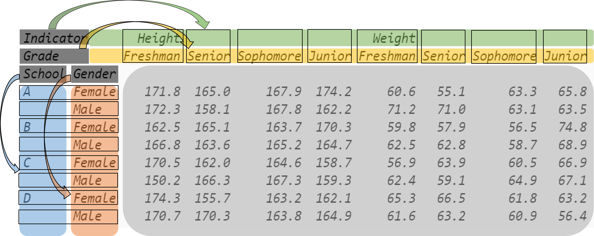

三、索引
一、索引器
1. 表的列索引
列索引是最常见的索引形式，一般通过 [] 来实现。通过 [列名] 可以从 DataFrame 中取出相应的列，返回值为 Series ，例如从表中取出姓名一列：
In [3]: df = pd.read_csv('data/learn_pandas.csv',
...: usecols = ['School', 'Grade', 'Name', 'Gender',
...: 'Weight', 'Transfer'])
...:
In [4]: df['Name'].head()
Out[4]:
0 Gaopeng Yang
1 Changqiang You
2 Mei Sun
3 Xiaojuan Sun
4 Gaojuan You
Name: Name, dtype: object
如果要取出多个列，则可以通过 [列名组成的列表] ，其返回值为一个 DataFrame ，例如从表中取出性别和姓名两列：
In [5]: df[['Gender', 'Name']].head()
Out[5]:
Gender Name
0 Female Gaopeng Yang
1 Male Changqiang You
2 Male Mei Sun
3 Female Xiaojuan Sun
4 Male Gaojuan You
此外，若要取出单列，且列名中不包含空格，则可以用 .列名 取出，这和 [列名] 是等价的：
In [6]: df.Name.head()
Out[6]:
0 Gaopeng Yang
1 Changqiang You
2 Mei Sun
3 Xiaojuan Sun
4 Gaojuan You
Name: Name, dtype: object
2. 序列的行索引
【a】以字符串为索引的 Series
如果取出单个索引的对应元素，则可以使用 [item] ，若 Series 只有单个值对应，则返回这个标量值，如果有多个值对应，则返回一个 Series：
In [7]: s = pd.Series([1, 2, 3, 4, 5, 6],
...: index=['a', 'b', 'a', 'a', 'a', 'c'])
...:
In [8]: s['a']
Out[8]:
a 1
a 3
a 4
a 5
dtype: int64
In [9]: s['b']
Out[9]: 2
如果取出多个索引的对应元素，则可以使用 [items的列表] ：
如果想要取出某两个索引之间的元素，并且这两个索引是在整个索引中唯一出现，则可以使用切片，同时需要注意这里的切片会包含两个端点：
如果前后端点的值存在重复，即非唯一值，那么需要经过排序才能使用切片：
In [12]: try:
....: s['a': 'b']
....: except Exception as e:
....: Err_Msg = e
....:
In [13]: Err_Msg
Out[13]: KeyError("Cannot get left slice bound for non-unique label: 'a'")
In [14]: s.sort_index()['a': 'b']
Out[14]:
a 1
a 3
a 4
a 5
b 2
dtype: int64
【b】以整数为索引的 Series
在使用数据的读入函数时，如果不特别指定所对应的列作为索引，那么会生成从 0 开始的整数索引作为默认索引。当然，任意一组符合长度要求的整数都可以作为索引。
和字符串一样，如果使用 [int] 或 [int_list] ，则可以取出对应索引 元素 的值：
In [15]: s = pd.Series(['a', 'b', 'c', 'd', 'e', 'f'],
....: index=[1, 3, 1, 2, 5, 4])
....:
In [16]: s[1]
Out[16]:
1 a
1 c
dtype: object
In [17]: s[[2,3]]
Out[17]:
2 d
3 b
dtype: object
如果使用整数切片，则会取出对应索引 位置 的值，注意这里的整数切片同 Python 中的切片一样不包含右端点：
关于索引类型的说明
如果不想陷入麻烦，那么请不要把纯浮点以及任何混合类型（字符串、整数、浮点类型等的混合）作为索引，否则可能会在具体的操作时报错或者返回非预期的结果，并且在实际的数据分析中也不存在这样做的动机。
3. loc 索引器
前面讲到了对 DataFrame 的列进行选取，下面要讨论其行的选取。对于表而言，有两种索引器，一种是基于 元素 的 loc 索引器，另一种是基于 位置 的 iloc 索引器。
loc 索引器的一般形式是 loc[*, *] ，其中第一个 * 代表行的选择，第二个 * 代表列的选择，如果省略第二个位置写作 loc[*] ，这个 * 是指行的筛选。其中， * 的位置一共有五类合法对象，分别是：单个元素、元素列表、元素切片、布尔列表以及函数，下面将依次说明。
为了演示相应操作，先利用 set_index 方法把 Name 列设为索引，关于该函数的其他用法将在多级索引一章介绍。
In [19]: df_demo = df.set_index('Name')
In [20]: df_demo.head()
Out[20]:
School Grade Gender Weight Transfer
Name
Gaopeng Yang Shanghai Jiao Tong University Freshman Female 46.0 N
Changqiang You Peking University Freshman Male 70.0 N
Mei Sun Shanghai Jiao Tong University Senior Male 89.0 N
Xiaojuan Sun Fudan University Sophomore Female 41.0 N
Gaojuan You Fudan University Sophomore Male 74.0 N
【a】 * 为单个元素
此时，直接取出相应的行或列，如果该元素在索引中重复则结果为 DataFrame，否则为 Series ：
In [21]: df_demo.loc['Qiang Sun'] # 多个人叫此名字
Out[21]:
School Grade Gender Weight Transfer
Name
Qiang Sun Tsinghua University Junior Female 53.0 N
Qiang Sun Tsinghua University Sophomore Female 40.0 N
Qiang Sun Shanghai Jiao Tong University Junior Female NaN N
In [22]: df_demo.loc['Quan Zhao'] # 名字唯一
Out[22]:
School Shanghai Jiao Tong University
Grade Junior
Gender Female
Weight 53.0
Transfer N
Name: Quan Zhao, dtype: object
也可以同时选择行和列：
In [23]: df_demo.loc['Qiang Sun', 'School'] # 返回Series
Out[23]:
Name
Qiang Sun Tsinghua University
Qiang Sun Tsinghua University
Qiang Sun Shanghai Jiao Tong University
Name: School, dtype: object
In [24]: df_demo.loc['Quan Zhao', 'School'] # 返回单个元素
Out[24]: 'Shanghai Jiao Tong University'
【b】 * 为元素列表
此时，取出列表中所有元素值对应的行或列：
In [25]: df_demo.loc[['Qiang Sun','Quan Zhao'], ['School','Gender']]
Out[25]:
School Gender
Name
Qiang Sun Tsinghua University Female
Qiang Sun Tsinghua University Female
Qiang Sun Shanghai Jiao Tong University Female
Quan Zhao Shanghai Jiao Tong University Female
【c】 * 为切片
之前的 Series 使用字符串索引时提到，如果是唯一值的起点和终点字符，那么就可以使用切片，并且包含两个端点，如果不唯一则报错：
In [26]: df_demo.loc['Gaojuan You':'Gaoqiang Qian', 'School':'Gender']
Out[26]:
School Grade Gender
Name
Gaojuan You Fudan University Sophomore Male
Xiaoli Qian Tsinghua University Freshman Female
Qiang Chu Shanghai Jiao Tong University Freshman Female
Gaoqiang Qian Tsinghua University Junior Female
需要注意的是，如果 DataFrame 使用整数索引，其使用整数切片的时候和上面字符串索引的要求一致，都是 元素 切片，包含端点且起点、终点不允许有重复值。
In [27]: df_loc_slice_demo = df_demo.copy()
In [28]: df_loc_slice_demo.index = range(df_demo.shape[0],0,-1)
In [29]: df_loc_slice_demo.loc[5:3]
Out[29]:
School Grade Gender Weight Transfer
5 Fudan University Junior Female 46.0 N
4 Tsinghua University Senior Female 50.0 N
3 Shanghai Jiao Tong University Senior Female 45.0 N
In [30]: df_loc_slice_demo.loc[3:5] # 没有返回，说明不是整数位置切片
Out[30]:
Empty DataFrame
Columns: [School, Grade, Gender, Weight, Transfer]
Index: []
【d】 * 为布尔列表
在实际的数据处理中，根据条件来筛选行是极其常见的，此处传入 loc 的布尔列表与 DataFrame 长度相同，且列表为 True 的位置所对应的行会被选中， False 则会被剔除。
例如，选出体重超过 70kg 的学生：
In [31]: df_demo.loc[df_demo.Weight>70].head()
Out[31]:
School Grade Gender Weight Transfer
Name
Mei Sun Shanghai Jiao Tong University Senior Male 89.0 N
Gaojuan You Fudan University Sophomore Male 74.0 N
Xiaopeng Zhou Shanghai Jiao Tong University Freshman Male 74.0 N
Xiaofeng Sun Tsinghua University Senior Male 71.0 N
Qiang Zheng Shanghai Jiao Tong University Senior Male 87.0 N
前面所提到的传入元素列表，也可以通过 isin 方法返回的布尔列表等价写出，例如选出所有大一和大四的同学信息：
In [32]: df_demo.loc[df_demo.Grade.isin(['Freshman', 'Senior'])].head()
Out[32]:
School Grade Gender Weight Transfer
Name
Gaopeng Yang Shanghai Jiao Tong University Freshman Female 46.0 N
Changqiang You Peking University Freshman Male 70.0 N
Mei Sun Shanghai Jiao Tong University Senior Male 89.0 N
Xiaoli Qian Tsinghua University Freshman Female 51.0 N
Qiang Chu Shanghai Jiao Tong University Freshman Female 52.0 N
对于复合条件而言，可以用 |（或）, &（且）, ~（取反） 的组合来实现，例如选出复旦大学中体重超过 70kg 的大四学生，或者北大男生中体重超过 80kg 的非大四的学生：
In [33]: condition_1_1 = df_demo.School == 'Fudan University'
In [34]: condition_1_2 = df_demo.Grade == 'Senior'
In [35]: condition_1_3 = df_demo.Weight > 70
In [36]: condition_1 = condition_1_1 & condition_1_2 & condition_1_3
In [37]: condition_2_1 = df_demo.School == 'Peking University'
In [38]: condition_2_2 = df_demo.Grade == 'Senior'
In [39]: condition_2_3 = df_demo.Weight > 80
In [40]: condition_2 = condition_2_1 & (~condition_2_2) & condition_2_3
In [41]: df_demo.loc[condition_1 | condition_2]
Out[41]:
School Grade Gender Weight Transfer
Name
Qiang Han Peking University Freshman Male 87.0 N
Chengpeng Zhou Fudan University Senior Male 81.0 N
Changpeng Zhao Peking University Freshman Male 83.0 N
Chengpeng Qian Fudan University Senior Male 73.0 Y
练一练
select_dtypes 是一个实用函数，它能够从表中选出相应类型的列，若要选出所有数值型的列，只需使用 .select_dtypes('number') ，请利用布尔列表选择的方法结合 DataFrame 的 dtypes 属性在 learn_pandas 数据集上实现这个功能。
【e】 * 为函数
这里的函数，必须以前面的四种合法形式之一为返回值，并且函数的输入值为 DataFrame 本身。假设仍然是上述复合条件筛选的例子，可以把逻辑写入一个函数中再返回，需要注意的是函数的形式参数 x 本质上即为 df_demo ：
In [42]: def condition(x):
....: condition_1_1 = x.School == 'Fudan University'
....: condition_1_2 = x.Grade == 'Senior'
....: condition_1_3 = x.Weight > 70
....: condition_1 = condition_1_1 & condition_1_2 & condition_1_3
....: condition_2_1 = x.School == 'Peking University'
....: condition_2_2 = x.Grade == 'Senior'
....: condition_2_3 = x.Weight > 80
....: condition_2 = condition_2_1 & (~condition_2_2) & condition_2_3
....: result = condition_1 | condition_2
....: return result
....:
In [43]: df_demo.loc[condition]
Out[43]:
School Grade Gender Weight Transfer
Name
Qiang Han Peking University Freshman Male 87.0 N
Chengpeng Zhou Fudan University Senior Male 81.0 N
Changpeng Zhao Peking University Freshman Male 83.0 N
Chengpeng Qian Fudan University Senior Male 73.0 Y
此外，还支持使用 lambda 表达式，其返回值也同样必须是先前提到的四种形式之一：
由于函数无法返回如 start: end: step 的切片形式，故返回切片时要用 slice 对象进行包装：
In [45]: df_demo.loc[lambda x: slice('Gaojuan You', 'Gaoqiang Qian')]
Out[45]:
School Grade Gender Weight Transfer
Name
Gaojuan You Fudan University Sophomore Male 74.0 N
Xiaoli Qian Tsinghua University Freshman Female 51.0 N
Qiang Chu Shanghai Jiao Tong University Freshman Female 52.0 N
Gaoqiang Qian Tsinghua University Junior Female 50.0 N
最后需要指出的是，对于 Series 也可以使用 loc 索引，其遵循的原则与 DataFrame 中用于行筛选的 loc[*] 完全一致，此处不再赘述。
不要使用链式赋值
在对表或者序列赋值时，应当在使用一层索引器后直接进行赋值操作，这样做是由于进行多次索引后赋值是赋在临时返回的 copy 副本上的，而没有真正修改元素从而报出 SettingWithCopyWarning 警告。例如，下面给出的例子：
In [46]: df_chain = pd.DataFrame([[0,0],[1,0],[-1,0]], columns=list('AB'))
In [47]: df_chain
Out[47]:
A B
0 0 0
1 1 0
2 -1 0
In [48]: import warnings
In [49]: with warnings.catch_warnings():
....: warnings.filterwarnings('error')
....: try:
....: df_chain[df_chain.A!=0].B = 1 # 使用方括号列索引后，再使用点的列索引
....: except Warning as w:
....: Warning_Msg = w
....:
In [50]: print(Warning_Msg)
A value is trying to be set on a copy of a slice from a DataFrame.
Try using .loc[row_indexer,col_indexer] = value instead
See the caveats in the documentation: https://pandas.pydata.org/pandas-docs/stable/user_guide/indexing.html#returning-a-view-versus-a-copy
In [51]: df_chain
Out[51]:
A B
0 0 0
1 1 0
2 -1 0
In [52]: df_chain.loc[df_chain.A!=0,'B'] = 1
In [53]: df_chain
Out[53]:
A B
0 0 0
1 1 1
2 -1 1
4. iloc 索引器
iloc 的使用与 loc 完全类似，只不过是针对位置进行筛选，在相应的 * 位置处一共也有五类合法对象，分别是：整数、整数列表、整数切片、布尔列表以及函数，函数的返回值必须是前面的四类合法对象中的一个，其输入同样也为 DataFrame 本身。
In [54]: df_demo.iloc[1, 1] # 第二行第二列
Out[54]: 'Freshman'
In [55]: df_demo.iloc[[0, 1], [0, 1]] # 前两行前两列
Out[55]:
School Grade
Name
Gaopeng Yang Shanghai Jiao Tong University Freshman
Changqiang You Peking University Freshman
In [56]: df_demo.iloc[1: 4, 2:4] # 切片不包含结束端点
Out[56]:
Gender Weight
Name
Changqiang You Male 70.0
Mei Sun Male 89.0
Xiaojuan Sun Female 41.0
In [57]: df_demo.iloc[lambda x: slice(1, 4)] # 传入切片为返回值的函数
Out[57]:
School Grade Gender Weight Transfer
Name
Changqiang You Peking University Freshman Male 70.0 N
Mei Sun Shanghai Jiao Tong University Senior Male 89.0 N
Xiaojuan Sun Fudan University Sophomore Female 41.0 N
在使用布尔列表的时候要特别注意，不能传入 Series 而必须传入序列的 values ，否则会报错。因此，在使用布尔筛选的时候还是应当优先考虑 loc 的方式。
例如，选出体重超过 80kg 的学生：
In [58]: df_demo.iloc[(df_demo.Weight>80).values].head()
Out[58]:
School Grade Gender Weight Transfer
Name
Mei Sun Shanghai Jiao Tong University Senior Male 89.0 N
Qiang Zheng Shanghai Jiao Tong University Senior Male 87.0 N
Qiang Han Peking University Freshman Male 87.0 N
Chengpeng Zhou Fudan University Senior Male 81.0 N
Feng Han Shanghai Jiao Tong University Sophomore Male 82.0 N
对 Series 而言同样也可以通过 iloc 返回相应位置的值或子序列：
In [59]: df_demo.School.iloc[1]
Out[59]: 'Peking University'
In [60]: df_demo.School.iloc[1:5:2]
Out[60]:
Name
Changqiang You Peking University
Xiaojuan Sun Fudan University
Name: School, dtype: object
5. query 方法
在 pandas 中，支持把字符串形式的查询表达式传入 query 方法来查询数据，其表达式的执行结果必须返回布尔列表。在进行复杂索引时，由于这种检索方式无需像普通方法一样重复使用 DataFrame 的名字来引用列名，一般而言会使代码长度在不降低可读性的前提下有所减少。
例如，将 loc 一节中的复合条件查询例子可以如下改写：
In [61]: df.query('((School == "Fudan University")&'
....: ' (Grade == "Senior")&'
....: ' (Weight > 70))|'
....: '((School == "Peking University")&'
....: ' (Grade != "Senior")&'
....: ' (Weight > 80))')
....:
Out[61]:
School Grade Name Gender Weight Transfer
38 Peking University Freshman Qiang Han Male 87.0 N
66 Fudan University Senior Chengpeng Zhou Male 81.0 N
99 Peking University Freshman Changpeng Zhao Male 83.0 N
131 Fudan University Senior Chengpeng Qian Male 73.0 Y
在 query 表达式中，帮用户注册了所有来自 DataFrame 的列名，所有属于该 Series 的方法都可以被调用，和正常的函数调用并没有区别，例如查询体重超过均值的学生：
In [62]: df.query('Weight > Weight.mean()').head()
Out[62]:
School Grade Name Gender Weight Transfer
1 Peking University Freshman Changqiang You Male 70.0 N
2 Shanghai Jiao Tong University Senior Mei Sun Male 89.0 N
4 Fudan University Sophomore Gaojuan You Male 74.0 N
10 Shanghai Jiao Tong University Freshman Xiaopeng Zhou Male 74.0 N
14 Tsinghua University Senior Xiaomei Zhou Female 57.0 N
query 中引用带空格的列名
对于含有空格的列名，需要使用 `col name` 的方式进行引用。
同时，在 query 中还注册了若干英语的字面用法，帮助提高可读性，例如： or, and, or, in, not in 。例如，筛选出男生中不是大一大二的学生：
In [63]: df.query('(Grade not in ["Freshman", "Sophomore"]) and'
....: '(Gender == "Male")').head()
....:
Out[63]:
School Grade Name Gender Weight Transfer
2 Shanghai Jiao Tong University Senior Mei Sun Male 89.0 N
16 Tsinghua University Junior Xiaoqiang Qin Male 68.0 N
17 Tsinghua University Junior Peng Wang Male 65.0 N
18 Tsinghua University Senior Xiaofeng Sun Male 71.0 N
21 Shanghai Jiao Tong University Senior Xiaopeng Shen Male 62.0 NaN
此外，在字符串中出现与列表的比较时， == 和 != 分别表示元素出现在列表和没有出现在列表，等价于 in 和 not in，例如查询所有大三和大四的学生：
In [64]: df.query('Grade == ["Junior", "Senior"]').head()
Out[64]:
School Grade Name Gender Weight Transfer
2 Shanghai Jiao Tong University Senior Mei Sun Male 89.0 N
7 Tsinghua University Junior Gaoqiang Qian Female 50.0 N
9 Peking University Junior Juan Xu Female NaN N
11 Tsinghua University Junior Xiaoquan Lv Female 43.0 N
12 Shanghai Jiao Tong University Senior Peng You Female 48.0 NaN
对于 query 中的字符串，如果要引用外部变量，只需在变量名前加 @ 符号。例如，取出体重位于 70kg 到 80kg 之间的学生：
In [65]: low, high =70, 80
In [66]: df.query('(Weight >= @low) & (Weight <= @high)').head()
Out[66]:
School Grade Name Gender Weight Transfer
1 Peking University Freshman Changqiang You Male 70.0 N
4 Fudan University Sophomore Gaojuan You Male 74.0 N
10 Shanghai Jiao Tong University Freshman Xiaopeng Zhou Male 74.0 N
18 Tsinghua University Senior Xiaofeng Sun Male 71.0 N
35 Peking University Freshman Gaoli Zhao Male 78.0 N
6. 随机抽样
如果把 DataFrame 的每一行看作一个样本，或把每一列看作一个特征，再把整个 DataFrame 看作总体，想要对样本或特征进行随机抽样就可以用 sample 函数。有时在拿到大型数据集后，想要对统计特征进行计算来了解数据的大致分布，但是这很费时间。同时，由于许多统计特征在等概率不放回的简单随机抽样条件下，是总体统计特征的无偏估计，比如样本均值和总体均值，那么就可以先从整张表中抽出一部分来做近似估计。
sample 函数中的主要参数为 n, axis, frac, replace, weights ，前三个分别是指抽样数量、抽样的方向（0 为行、1 为列）和抽样比例（0.3 则为从总体中抽出 30% 的样本）。
replace 和 weights 分别是指是否放回和每个样本的抽样相对概率，当 replace = True 则表示有放回抽样。例如，对下面构造的 df_sample 以 value 值的相对大小为抽样概率进行有放回抽样，抽样数量为 3。
In [67]: df_sample = pd.DataFrame({'id': list('abcde'),
....: 'value': [1, 2, 3, 4, 90]})
....:
In [68]: df_sample
Out[68]:
id value
0 a 1
1 b 2
2 c 3
3 d 4
4 e 90
In [69]: df_sample.sample(3, replace = True, weights = df_sample.value)
Out[69]:
id value
4 e 90
4 e 90
4 e 90
二、多级索引
1. 多级索引及其表的结构
为了更加清晰地说明具有多级索引的 DataFrame 结构，下面新构造一张表，读者可以忽略这里的构造方法，它们将会在第 4 小节被更详细地讲解。
In [70]: np.random.seed(0)
In [71]: multi_index = pd.MultiIndex.from_product([list('ABCD'),
....: df.Gender.unique()], names=('School', 'Gender'))
....:
In [72]: multi_column = pd.MultiIndex.from_product([['Height', 'Weight'],
....: df.Grade.unique()], names=('Indicator', 'Grade'))
....:
In [73]: df_multi = pd.DataFrame(np.c_[(np.random.randn(8,4)*5 + 163).tolist(),
....: (np.random.randn(8,4)*5 + 65).tolist()],
....: index = multi_index,
....: columns = multi_column).round(1)
....:
In [74]: df_multi
Out[74]:
Indicator Height Weight
Grade Freshman Senior Sophomore Junior Freshman Senior Sophomore Junior
School Gender
A Female 171.8 165.0 167.9 174.2 60.6 55.1 63.3 65.8
Male 172.3 158.1 167.8 162.2 71.2 71.0 63.1 63.5
B Female 162.5 165.1 163.7 170.3 59.8 57.9 56.5 74.8
Male 166.8 163.6 165.2 164.7 62.5 62.8 58.7 68.9
C Female 170.5 162.0 164.6 158.7 56.9 63.9 60.5 66.9
Male 150.2 166.3 167.3 159.3 62.4 59.1 64.9 67.1
D Female 174.3 155.7 163.2 162.1 65.3 66.5 61.8 63.2
Male 170.7 170.3 163.8 164.9 61.6 63.2 60.9 56.4
下图通过颜色区分，标记了 DataFrame 的结构。与单层索引的表一样，具备元素值、行索引和列索引三个部分。其中，这里的行索引和列索引都是 MultiIndex 类型，只不过 索引中的一个元素是元组 而不是单层索引中的标量。例如，行索引的第四个元素为 ("B", "Male") ，列索引的第二个元素为 ("Height", "Senior") ，这里需要注意，外层连续出现相同的值时，第一次之后出现的会被隐藏显示，使结果的可读性增强。

与单层索引类似， MultiIndex 也具有名字属性，图中的 School 和 Gender 分别对应了表的第一层和第二层行索引的名字， Indicator 和 Grade 分别对应了第一层和第二层列索引的名字。
索引的名字和值属性分别可以通过 names 和 values 获得：
In [75]: df_multi.index.names
Out[75]: FrozenList(['School', 'Gender'])
In [76]: df_multi.columns.names
Out[76]: FrozenList(['Indicator', 'Grade'])
In [77]: df_multi.index.values
Out[77]:
array([('A', 'Female'), ('A', 'Male'), ('B', 'Female'), ('B', 'Male'),
('C', 'Female'), ('C', 'Male'), ('D', 'Female'), ('D', 'Male')],
dtype=object)
In [78]: df_multi.columns.values
Out[78]:
array([('Height', 'Freshman'), ('Height', 'Senior'),
('Height', 'Sophomore'), ('Height', 'Junior'),
('Weight', 'Freshman'), ('Weight', 'Senior'),
('Weight', 'Sophomore'), ('Weight', 'Junior')], dtype=object)
如果想要得到某一层的索引，则需要通过 get_level_values 获得：
In [79]: df_multi.index.get_level_values(0)
Out[79]: Index(['A', 'A', 'B', 'B', 'C', 'C', 'D', 'D'], dtype='object', name='School')
但对于索引而言，无论是单层还是多层，用户都无法通过 index_obj[0] = item 的方式来修改元素，也不能通过 index_name[0] = new_name 的方式来修改名字，关于如何修改这些属性的话题将在第三节被讨论。
2. 多级索引中的 loc 索引器
熟悉了结构后，现在回到原表，将学校和年级设为索引，此时的行为多级索引，列为单级索引，由于默认状态的列索引不含名字，因此对应于刚刚图中 Indicator 和 Grade 的索引名位置是空缺的。
In [80]: df_multi = df.set_index(['School', 'Grade'])
In [81]: df_multi.head()
Out[81]:
Name Gender Weight Transfer
School Grade
Shanghai Jiao Tong University Freshman Gaopeng Yang Female 46.0 N
Peking University Freshman Changqiang You Male 70.0 N
Shanghai Jiao Tong University Senior Mei Sun Male 89.0 N
Fudan University Sophomore Xiaojuan Sun Female 41.0 N
Sophomore Gaojuan You Male 74.0 N
由于多级索引中的单个元素以元组为单位，因此之前在第一节介绍的 loc 和 iloc 方法完全可以照搬，只需把标量的位置替换成对应的元组。
当传入元组列表或单个元组或返回前二者的函数时，需要先进行索引排序以避免性能警告：
In [82]: with warnings.catch_warnings():
....: warnings.filterwarnings('error')
....: try:
....: df_multi.loc[('Fudan University', 'Junior')].head()
....: except Warning as w:
....: Warning_Msg = w
....:
In [83]: Warning_Msg
Out[83]: pandas.errors.PerformanceWarning('indexing past lexsort depth may impact performance.')
In [84]: df_sorted = df_multi.sort_index()
In [85]: df_sorted.loc[('Fudan University', 'Junior')].head()
Out[85]:
Name Gender Weight Transfer
School Grade
Fudan University Junior Yanli You Female 48.0 N
Junior Chunqiang Chu Male 72.0 N
Junior Changfeng Lv Male 76.0 N
Junior Yanjuan Lv Female 49.0 NaN
Junior Gaoqiang Zhou Female 43.0 N
In [86]: df_sorted.loc[[('Fudan University', 'Senior'),
....: ('Shanghai Jiao Tong University', 'Freshman')]].head()
....:
Out[86]:
Name Gender Weight Transfer
School Grade
Fudan University Senior Chengpeng Zheng Female 38.0 N
Senior Feng Zhou Female 47.0 N
Senior Gaomei Lv Female 34.0 N
Senior Chunli Lv Female 56.0 N
Senior Chengpeng Zhou Male 81.0 N
In [87]: df_sorted.loc[df_sorted.Weight > 70].head() # 布尔列表也是可用的
Out[87]:
Name Gender Weight Transfer
School Grade
Fudan University Freshman Feng Wang Male 74.0 N
Junior Chunqiang Chu Male 72.0 N
Junior Changfeng Lv Male 76.0 N
Senior Chengpeng Zhou Male 81.0 N
Senior Chengpeng Qian Male 73.0 Y
In [88]: df_sorted.loc[lambda x:('Fudan University','Junior')].head()
Out[88]:
Name Gender Weight Transfer
School Grade
Fudan University Junior Yanli You Female 48.0 N
Junior Chunqiang Chu Male 72.0 N
Junior Changfeng Lv Male 76.0 N
Junior Yanjuan Lv Female 49.0 NaN
Junior Gaoqiang Zhou Female 43.0 N
当使用切片时需要注意，在单级索引中只要切片端点元素是唯一的，那么就可以进行切片，但在多级索引中，无论元组在索引中是否重复出现，都必须经过排序才能使用切片，否则报错：
In [89]: try:
....: df_multi.loc[('Fudan University', 'Senior'):].head()
....: except Exception as e:
....: Err_Msg = e
....:
In [90]: Err_Msg
Out[90]: pandas.errors.UnsortedIndexError('Key length (2) was greater than MultiIndex lexsort depth (0)')
In [91]: df_sorted.loc[('Fudan University', 'Senior'):].head()
Out[91]:
Name Gender Weight Transfer
School Grade
Fudan University Senior Chengpeng Zheng Female 38.0 N
Senior Feng Zhou Female 47.0 N
Senior Gaomei Lv Female 34.0 N
Senior Chunli Lv Female 56.0 N
Senior Chengpeng Zhou Male 81.0 N
In [92]: df_unique = df.drop_duplicates(subset=['School','Grade']
....: ).set_index(['School', 'Grade'])
....:
In [93]: df_unique.head()
Out[93]:
Name Gender Weight Transfer
School Grade
Shanghai Jiao Tong University Freshman Gaopeng Yang Female 46.0 N
Peking University Freshman Changqiang You Male 70.0 N
Shanghai Jiao Tong University Senior Mei Sun Male 89.0 N
Fudan University Sophomore Xiaojuan Sun Female 41.0 N
Tsinghua University Freshman Xiaoli Qian Female 51.0 N
In [94]: try:
....: df_unique.loc[('Fudan University', 'Senior'):].head()
....: except Exception as e:
....: Err_Msg = e
....:
In [95]: Err_Msg
Out[95]: pandas.errors.UnsortedIndexError('Key length (2) was greater than MultiIndex lexsort depth (0)')
In [96]: df_unique.sort_index().loc[('Fudan University', 'Senior'):].head()
Out[96]:
Name Gender Weight Transfer
School Grade
Fudan University Senior Chengpeng Zheng Female 38.0 N
Sophomore Xiaojuan Sun Female 41.0 N
Peking University Freshman Changqiang You Male 70.0 N
Junior Juan Xu Female NaN N
Senior Changli Lv Female 41.0 N
此外，在多级索引中的元组有一种特殊的用法，可以对多层的元素进行交叉组合后索引，但同时需要指定 loc 的列，全选则用 : 表示。其中，每一层需要选中的元素用列表存放，传入 loc 的形式为 [(level_0_list, level_1_list), cols] 。例如，想要得到所有北大和复旦的大二大三学生，可以如下写出：
In [97]: res = df_multi.loc[(['Peking University', 'Fudan University'],
....: ['Sophomore', 'Junior']), :]
....:
In [98]: res.head()
Out[98]:
Name Gender Weight Transfer
School Grade
Peking University Sophomore Changmei Xu Female 43.0 N
Sophomore Xiaopeng Qin Male NaN N
Sophomore Mei Xu Female 39.0 N
Sophomore Xiaoli Zhou Female 55.0 N
Sophomore Peng Han Female 34.0 NaN
In [99]: res.shape
Out[99]: (33, 4)
下面的语句和上面类似，但仍然传入的是元素（这里为元组）的列表，它们的意义是不同的，表示的是选出北大的大三学生和复旦的大二学生：
In [100]: res = df_multi.loc[[('Peking University', 'Junior'),
.....: ('Fudan University', 'Sophomore')]]
.....:
In [101]: res.head()
Out[101]:
Name Gender Weight Transfer
School Grade
Peking University Junior Juan Xu Female NaN N
Junior Changjuan You Female 47.0 N
Junior Gaoli Xu Female 48.0 N
Junior Gaoquan Zhou Male 70.0 N
Junior Qiang You Female 56.0 N
In [102]: res.shape
Out[102]: (16, 4)
3. IndexSlice 对象
前面介绍的方法，即使在索引不重复的时候，也只能对元组整体进行切片，而不能对每层进行切片，也不允许将切片和布尔列表混合使用，引入 IndexSlice 对象就能解决这个问题。 Slice 对象一共有两种形式，第一种为 loc[idx[*,*]] 型，第二种为 loc[idx[*,*],idx[*,*]] 型，下面将进行介绍。为了方便演示，下面构造一个 索引不重复的 DataFrame ：
In [103]: np.random.seed(0)
In [104]: L1,L2 = ['A','B','C'],['a','b','c']
In [105]: mul_index1 = pd.MultiIndex.from_product([L1,L2],names=('Upper', 'Lower'))
In [106]: L3,L4 = ['D','E','F'],['d','e','f']
In [107]: mul_index2 = pd.MultiIndex.from_product([L3,L4],names=('Big', 'Small'))
In [108]: df_ex = pd.DataFrame(np.random.randint(-9,10,(9,9)),
.....: index=mul_index1,
.....: columns=mul_index2)
.....:
In [109]: df_ex
Out[109]:
Big D E F
Small d e f d e f d e f
Upper Lower
A a 3 6 -9 -6 -6 -2 0 9 -5
b -3 3 -8 -3 -2 5 8 -4 4
c -1 0 7 -4 6 6 -9 9 -6
B a 8 5 -2 -9 -8 0 -9 1 -6
b 2 9 -7 -9 -9 -5 -4 -3 -1
c 8 6 -5 0 1 -8 -8 -2 0
C a -6 -3 2 5 9 -9 5 -6 3
b 1 2 -5 -3 -5 6 -6 3 -5
c -1 5 6 -6 6 4 7 8 -4
为了使用 silce 对象，先要进行定义：
【a】 loc[idx[*,*]] 型
这种情况并不能进行多层分别切片，前一个 * 表示行的选择，后一个 * 表示列的选择，与单纯的 loc 是类似的：
In [111]: df_ex.loc[idx['C':, ('D', 'f'):]]
Out[111]:
Big D E F
Small f d e f d e f
Upper Lower
C a 2 5 9 -9 5 -6 3
b -5 -3 -5 6 -6 3 -5
c 6 -6 6 4 7 8 -4
另外，也支持布尔序列的索引：
In [112]: df_ex.loc[idx[:'A', lambda x:x.sum()>0]] # 列和大于0
Out[112]:
Big D F
Small d e e
Upper Lower
A a 3 6 9
b -3 3 -4
c -1 0 9
【b】 loc[idx[*,*],idx[*,*]] 型
这种情况能够分层进行切片，前一个 idx 指代的是行索引，后一个是列索引。
In [113]: df_ex.loc[idx[:'A', 'b':], idx['E':, 'e':]]
Out[113]:
Big E F
Small e f e f
Upper Lower
A b -2 5 -4 4
c 6 6 9 -6
但需要注意的是，此时不支持使用函数：
In [114]: try:
.....: df_ex.loc[idx[:'A', lambda x: 'b'], idx['E':, 'e':]]
.....: except Exception as e:
.....: Err_Msg = e
.....:
In [115]: Err_Msg
Out[115]: KeyError(<function __main__.<lambda>(x)>)
4. 多级索引的构造
前面提到了多级索引表的结构和切片，那么除了使用 set_index 之外，如何自己构造多级索引呢？常用的有 from_tuples, from_arrays, from_product 三种方法，它们都是 pd.MultiIndex 对象下的函数。
from_tuples 指根据传入由元组组成的列表进行构造：
In [116]: my_tuple = [('a','cat'),('a','dog'),('b','cat'),('b','dog')]
In [117]: pd.MultiIndex.from_tuples(my_tuple, names=['First','Second'])
Out[117]:
MultiIndex([('a', 'cat'),
('a', 'dog'),
('b', 'cat'),
('b', 'dog')],
names=['First', 'Second'])
from_arrays 指根据传入列表中，对应层的列表进行构造：
In [118]: my_array = [list('aabb'), ['cat', 'dog']*2]
In [119]: pd.MultiIndex.from_arrays(my_array, names=['First','Second'])
Out[119]:
MultiIndex([('a', 'cat'),
('a', 'dog'),
('b', 'cat'),
('b', 'dog')],
names=['First', 'Second'])
from_product 指根据给定多个列表的笛卡尔积进行构造：
In [120]: my_list1 = ['a','b']
In [121]: my_list2 = ['cat','dog']
In [122]: pd.MultiIndex.from_product([my_list1,
.....: my_list2],
.....: names=['First','Second'])
.....:
Out[122]:
MultiIndex([('a', 'cat'),
('a', 'dog'),
('b', 'cat'),
('b', 'dog')],
names=['First', 'Second'])
三、索引的常用方法
1. 索引层的交换和删除
为了方便理解交换的过程，这里构造一个三级索引的例子：
In [123]: np.random.seed(0)
In [124]: L1,L2,L3 = ['A','B'],['a','b'],['alpha','beta']
In [125]: mul_index1 = pd.MultiIndex.from_product([L1,L2,L3],
.....: names=('Upper', 'Lower','Extra'))
.....:
In [126]: L4,L5,L6 = ['C','D'],['c','d'],['cat','dog']
In [127]: mul_index2 = pd.MultiIndex.from_product([L4,L5,L6],
.....: names=('Big', 'Small', 'Other'))
.....:
In [128]: df_ex = pd.DataFrame(np.random.randint(-9,10,(8,8)),
.....: index=mul_index1,
.....: columns=mul_index2)
.....:
In [129]: df_ex
Out[129]:
Big C D
Small c d c d
Other cat dog cat dog cat dog cat dog
Upper Lower Extra
A a alpha 3 6 -9 -6 -6 -2 0 9
beta -5 -3 3 -8 -3 -2 5 8
b alpha -4 4 -1 0 7 -4 6 6
beta -9 9 -6 8 5 -2 -9 -8
B a alpha 0 -9 1 -6 2 9 -7 -9
beta -9 -5 -4 -3 -1 8 6 -5
b alpha 0 1 -8 -8 -2 0 -6 -3
beta 2 5 9 -9 5 -6 3 1
索引层的交换由 swaplevel 和 reorder_levels 完成，前者只能交换两个层，而后者可以交换任意层，两者都可以指定交换的是轴是哪一个，即行索引或列索引：
In [130]: df_ex.swaplevel(0,2,axis=1).head() # 列索引的第一层和第三层交换
Out[130]:
Other cat dog cat dog cat dog cat dog
Small c c d d c c d d
Big C C C C D D D D
Upper Lower Extra
A a alpha 3 6 -9 -6 -6 -2 0 9
beta -5 -3 3 -8 -3 -2 5 8
b alpha -4 4 -1 0 7 -4 6 6
beta -9 9 -6 8 5 -2 -9 -8
B a alpha 0 -9 1 -6 2 9 -7 -9
In [131]: df_ex.reorder_levels([2,0,1],axis=0).head() # 列表数字指代原来索引中的层
Out[131]:
Big C D
Small c d c d
Other cat dog cat dog cat dog cat dog
Extra Upper Lower
alpha A a 3 6 -9 -6 -6 -2 0 9
beta A a -5 -3 3 -8 -3 -2 5 8
alpha A b -4 4 -1 0 7 -4 6 6
beta A b -9 9 -6 8 5 -2 -9 -8
alpha B a 0 -9 1 -6 2 9 -7 -9
轴之间的索引交换
这里只涉及行或列索引内部的交换，不同方向索引之间的交换将在第五章中被讨论。
若想要删除某一层的索引，可以使用 droplevel 方法：
In [132]: df_ex.droplevel(1,axis=1)
Out[132]:
Big C D
Other cat dog cat dog cat dog cat dog
Upper Lower Extra
A a alpha 3 6 -9 -6 -6 -2 0 9
beta -5 -3 3 -8 -3 -2 5 8
b alpha -4 4 -1 0 7 -4 6 6
beta -9 9 -6 8 5 -2 -9 -8
B a alpha 0 -9 1 -6 2 9 -7 -9
beta -9 -5 -4 -3 -1 8 6 -5
b alpha 0 1 -8 -8 -2 0 -6 -3
beta 2 5 9 -9 5 -6 3 1
In [133]: df_ex.droplevel([0,1],axis=0)
Out[133]:
Big C D
Small c d c d
Other cat dog cat dog cat dog cat dog
Extra
alpha 3 6 -9 -6 -6 -2 0 9
beta -5 -3 3 -8 -3 -2 5 8
alpha -4 4 -1 0 7 -4 6 6
beta -9 9 -6 8 5 -2 -9 -8
alpha 0 -9 1 -6 2 9 -7 -9
beta -9 -5 -4 -3 -1 8 6 -5
alpha 0 1 -8 -8 -2 0 -6 -3
beta 2 5 9 -9 5 -6 3 1
2. 索引属性的修改
通过 rename_axis 可以对索引层的名字进行修改，常用的修改方式是传入字典的映射：
In [134]: df_ex.rename_axis(index={'Upper':'Changed_row'},
.....: columns={'Other':'Changed_Col'}).head()
.....:
Out[134]:
Big C D
Small c d c d
Changed_Col cat dog cat dog cat dog cat dog
Changed_row Lower Extra
A a alpha 3 6 -9 -6 -6 -2 0 9
beta -5 -3 3 -8 -3 -2 5 8
b alpha -4 4 -1 0 7 -4 6 6
beta -9 9 -6 8 5 -2 -9 -8
B a alpha 0 -9 1 -6 2 9 -7 -9
通过 rename 可以对索引的值进行修改，如果是多级索引需要指定修改的层号 level ：
In [135]: df_ex.rename(columns={'cat':'not_cat'},
.....: level=2).head()
.....:
Out[135]:
Big C D
Small c d c d
Other not_cat dog not_cat dog not_cat dog not_cat dog
Upper Lower Extra
A a alpha 3 6 -9 -6 -6 -2 0 9
beta -5 -3 3 -8 -3 -2 5 8
b alpha -4 4 -1 0 7 -4 6 6
beta -9 9 -6 8 5 -2 -9 -8
B a alpha 0 -9 1 -6 2 9 -7 -9
传入参数也可以是函数，其输入值就是索引元素：
In [136]: df_ex.rename(index=lambda x:str.upper(x),
.....: level=2).head()
.....:
Out[136]:
Big C D
Small c d c d
Other cat dog cat dog cat dog cat dog
Upper Lower Extra
A a ALPHA 3 6 -9 -6 -6 -2 0 9
BETA -5 -3 3 -8 -3 -2 5 8
b ALPHA -4 4 -1 0 7 -4 6 6
BETA -9 9 -6 8 5 -2 -9 -8
B a ALPHA 0 -9 1 -6 2 9 -7 -9
练一练
尝试在 rename_axis 中使用函数完成与例子中一样的功能，即把 Upper 和 Other 分别替换为 Changed_row 和 Changed_col。
对于整个索引的元素替换，可以利用迭代器实现：
In [137]: new_values = iter(list('abcdefgh'))
In [138]: df_ex.rename(index=lambda x:next(new_values),
.....: level=2)
.....:
Out[138]:
Big C D
Small c d c d
Other cat dog cat dog cat dog cat dog
Upper Lower Extra
A a a 3 6 -9 -6 -6 -2 0 9
b -5 -3 3 -8 -3 -2 5 8
b c -4 4 -1 0 7 -4 6 6
d -9 9 -6 8 5 -2 -9 -8
B a e 0 -9 1 -6 2 9 -7 -9
f -9 -5 -4 -3 -1 8 6 -5
b g 0 1 -8 -8 -2 0 -6 -3
h 2 5 9 -9 5 -6 3 1
若想要对某个位置的元素进行修改，在单层索引时容易实现，即先取出索引的 values 属性，再给对得到的列表进行修改，最后再对 index 对象重新赋值。但是如果是多级索引的话就有些麻烦，一个解决的方案是先把某一层索引临时转为表的元素，然后再进行修改，最后重新设定为索引，下面一节将介绍这些操作。
另外一个需要介绍的函数是 map ，它是定义在 Index 上的方法，与前面 rename 方法中层的函数式用法是类似的，只不过它传入的不是层的标量值，而是直接传入索引的元组，这为用户进行跨层的修改提供了便利。例如，可以等价地写出上面的字符串转大写的操作：
In [139]: df_temp = df_ex.copy()
In [140]: new_idx = df_temp.index.map(lambda x: (x[0],
.....: x[1],
.....: str.upper(x[2])))
.....:
In [141]: df_temp.index = new_idx
In [142]: df_temp.head()
Out[142]:
Big C D
Small c d c d
Other cat dog cat dog cat dog cat dog
Upper Lower Extra
A a ALPHA 3 6 -9 -6 -6 -2 0 9
BETA -5 -3 3 -8 -3 -2 5 8
b ALPHA -4 4 -1 0 7 -4 6 6
BETA -9 9 -6 8 5 -2 -9 -8
B a ALPHA 0 -9 1 -6 2 9 -7 -9
关于 map 的另一个使用方法是对多级索引的压缩，这在第四章和第五章的一些操作中是有用的：
In [143]: df_temp = df_ex.copy()
In [144]: new_idx = df_temp.index.map(lambda x: (x[0]+'-'+
.....: x[1]+'-'+
.....: x[2]))
.....:
In [145]: df_temp.index = new_idx
In [146]: df_temp.head() # 单层索引
Out[146]:
Big C D
Small c d c d
Other cat dog cat dog cat dog cat dog
A-a-alpha 3 6 -9 -6 -6 -2 0 9
A-a-beta -5 -3 3 -8 -3 -2 5 8
A-b-alpha -4 4 -1 0 7 -4 6 6
A-b-beta -9 9 -6 8 5 -2 -9 -8
B-a-alpha 0 -9 1 -6 2 9 -7 -9
同时，也可以反向地展开：
In [147]: new_idx = df_temp.index.map(lambda x:tuple(x.split('-')))
In [148]: df_temp.index = new_idx
In [149]: df_temp.head() # 三层索引
Out[149]:
Big C D
Small c d c d
Other cat dog cat dog cat dog cat dog
A a alpha 3 6 -9 -6 -6 -2 0 9
beta -5 -3 3 -8 -3 -2 5 8
b alpha -4 4 -1 0 7 -4 6 6
beta -9 9 -6 8 5 -2 -9 -8
B a alpha 0 -9 1 -6 2 9 -7 -9
3. 索引的设置与重置
为了说明本节的函数，下面构造一个新表：
In [150]: df_new = pd.DataFrame({'A':list('aacd'),
.....: 'B':list('PQRT'),
.....: 'C':[1,2,3,4]})
.....:
In [151]: df_new
Out[151]:
A B C
0 a P 1
1 a Q 2
2 c R 3
3 d T 4
索引的设置可以使用 set_index 完成，这里的主要参数是 append ，表示是否来保留原来的索引，直接把新设定的添加到原索引的内层：
In [152]: df_new.set_index('A')
Out[152]:
B C
A
a P 1
a Q 2
c R 3
d T 4
In [153]: df_new.set_index('A', append=True)
Out[153]:
B C
A
0 a P 1
1 a Q 2
2 c R 3
3 d T 4
可以同时指定多个列作为索引：
如果想要添加索引的列没有出现在其中，那么可以直接在参数中传入相应的 Series ：
In [155]: my_index = pd.Series(list('WXYZ'), name='D')
In [156]: df_new = df_new.set_index(['A', my_index])
In [157]: df_new
Out[157]:
B C
A D
a W P 1
X Q 2
c Y R 3
d Z T 4
reset_index 是 set_index 的逆函数，其主要参数是 drop ，表示是否要把去掉的索引层丢弃，而不是添加到列中：
In [158]: df_new.reset_index(['D'])
Out[158]:
D B C
A
a W P 1
a X Q 2
c Y R 3
d Z T 4
In [159]: df_new.reset_index(['D'], drop=True)
Out[159]:
B C
A
a P 1
a Q 2
c R 3
d T 4
如果重置了所有的索引，那么 pandas 会直接重新生成一个默认索引：
4. 索引的变形
在某些场合下，需要对索引做一些扩充或者剔除，更具体地要求是给定一个新的索引，把原表中相应的索引对应元素填充到新索引构成的表中。例如，下面的表中给出了员工信息，需要重新制作一张新的表，要求增加一名员工的同时去掉身高列并增加性别列：
In [161]: df_reindex = pd.DataFrame({"Weight":[60,70,80],
.....: "Height":[176,180,179]},
.....: index=['1001','1003','1002'])
.....:
In [162]: df_reindex
Out[162]:
Weight Height
1001 60 176
1003 70 180
1002 80 179
In [163]: df_reindex.reindex(index=['1001','1002','1003','1004'],
.....: columns=['Weight','Gender'])
.....:
Out[163]:
Weight Gender
1001 60.0 NaN
1002 80.0 NaN
1003 70.0 NaN
1004 NaN NaN
这种需求常出现在时间序列索引的时间点填充以及 ID 编号的扩充。另外，需要注意的是原来表中的数据和新表中会根据索引自动对齐，例如原先的 1002 号位置在 1003 号之后，而新表中相反，那么 reindex 中会根据元素对齐，与位置无关。
还有一个与 reindex 功能类似的函数是 reindex_like ，其功能是仿照传入的表索引来进行被调用表索引的变形。例如，现在已经存在一张表具备了目标索引的条件，那么上述功能可采用下述代码得到：
In [164]: df_existed = pd.DataFrame(index=['1001','1002','1003','1004'],
.....: columns=['Weight','Gender'])
.....:
In [165]: df_reindex.reindex_like(df_existed)
Out[165]:
Weight Gender
1001 60.0 NaN
1002 80.0 NaN
1003 70.0 NaN
1004 NaN NaN
四、索引运算
1. 集合的运算法则
经常会有一种利用集合运算来取出符合条件行的需求，例如有两张表 A 和 B ，它们的索引都是员工编号，现在需要筛选出两表索引交集的所有员工信息，此时通过 Index 上的运算操作就很容易实现。
不过在此之前，不妨先复习一下常见的四种集合运算：
2. 一般的索引运算
由于集合的元素是互异的，但是索引中可能有相同的元素，先用 unique 去重后再进行运算。下面构造两张最为简单的示例表进行演示：
In [166]: df_set_1 = pd.DataFrame([[0,1],[1,2],[3,4]],
.....: index = pd.Index(['a','b','a'],name='id1'))
.....:
In [167]: df_set_2 = pd.DataFrame([[4,5],[2,6],[7,1]],
.....: index = pd.Index(['b','b','c'],name='id2'))
.....:
In [168]: id1, id2 = df_set_1.index.unique(), df_set_2.index.unique()
In [169]: id1.intersection(id2)
Out[169]: Index(['b'], dtype='object')
In [170]: id1.union(id2)
Out[170]: Index(['a', 'b', 'c'], dtype='object')
In [171]: id1.difference(id2)
Out[171]: Index(['a'], dtype='object')
In [172]: id1.symmetric_difference(id2)
Out[172]: Index(['a', 'c'], dtype='object')
若两张表需要做集合运算的列并没有被设置索引，一种办法是先转成索引，运算后再恢复，另一种方法是利用 isin 函数，例如在重置索引的第一张表中选出 id 列交集的所在行：
In [173]: df_set_in_col_1 = df_set_1.reset_index()
In [174]: df_set_in_col_2 = df_set_2.reset_index()
In [175]: df_set_in_col_1
Out[175]:
id1 0 1
0 a 0 1
1 b 1 2
2 a 3 4
In [176]: df_set_in_col_2
Out[176]:
id2 0 1
0 b 4 5
1 b 2 6
2 c 7 1
In [177]: df_set_in_col_1[df_set_in_col_1.id1.isin(df_set_in_col_2.id2)]
Out[177]:
id1 0 1
1 b 1 2
五、练习
Ex1：公司员工数据集
现有一份公司员工数据集：
In [178]: df = pd.read_csv('data/company.csv')
In [179]: df.head(3)
Out[179]:
EmployeeID birthdate_key age city_name department job_title gender
0 1318 1/3/1954 61 Vancouver Executive CEO M
1 1319 1/3/1957 58 Vancouver Executive VP Stores F
2 1320 1/2/1955 60 Vancouver Executive Legal Counsel F
-
分别只使用
query和loc选出年龄不超过四十岁且工作部门为Dairy或Bakery的男性。 -
选出员工
ID号 为奇数所在行的第 1、第 3 和倒数第 2 列。 -
按照以下步骤进行索引操作：
-
把后三列设为索引后交换内外两层
-
恢复中间层索引
-
修改外层索引名为
Gender -
用下划线合并两层行索引
-
把行索引拆分为原状态
-
修改索引名为原表名称
-
恢复默认索引并将列保持为原表的相对位置
-
Ex2：巧克力数据集
现有一份关于巧克力评价的数据集：
In [180]: df = pd.read_csv('data/chocolate.csv')
In [181]: df.head(3)
Out[181]:
Company Review\nDate Cocoa\nPercent Company\nLocation Rating
0 A. Morin 2016 63% France 3.75
1 A. Morin 2015 70% France 2.75
2 A. Morin 2015 70% France 3.00
-
把列索引名中的
\n替换为空格。 -
巧克力
Rating评分为 1 至 5，每 0.25 分一档，请选出 2.75 分及以下且可可含量Cocoa Percent高于中位数的样本。 -
将
Review Date和Company Location设为索引后，选出Review Date在 2012 年之后且Company Location不属于France, Canada, Amsterdam, Belgium的样本。